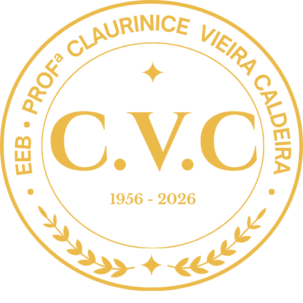
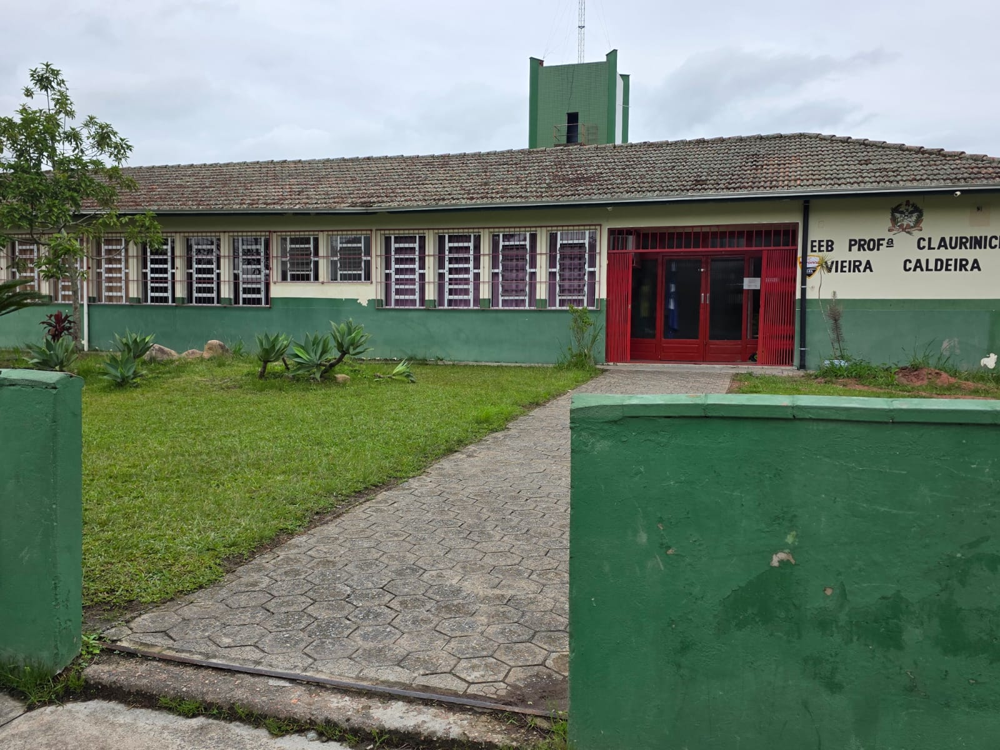
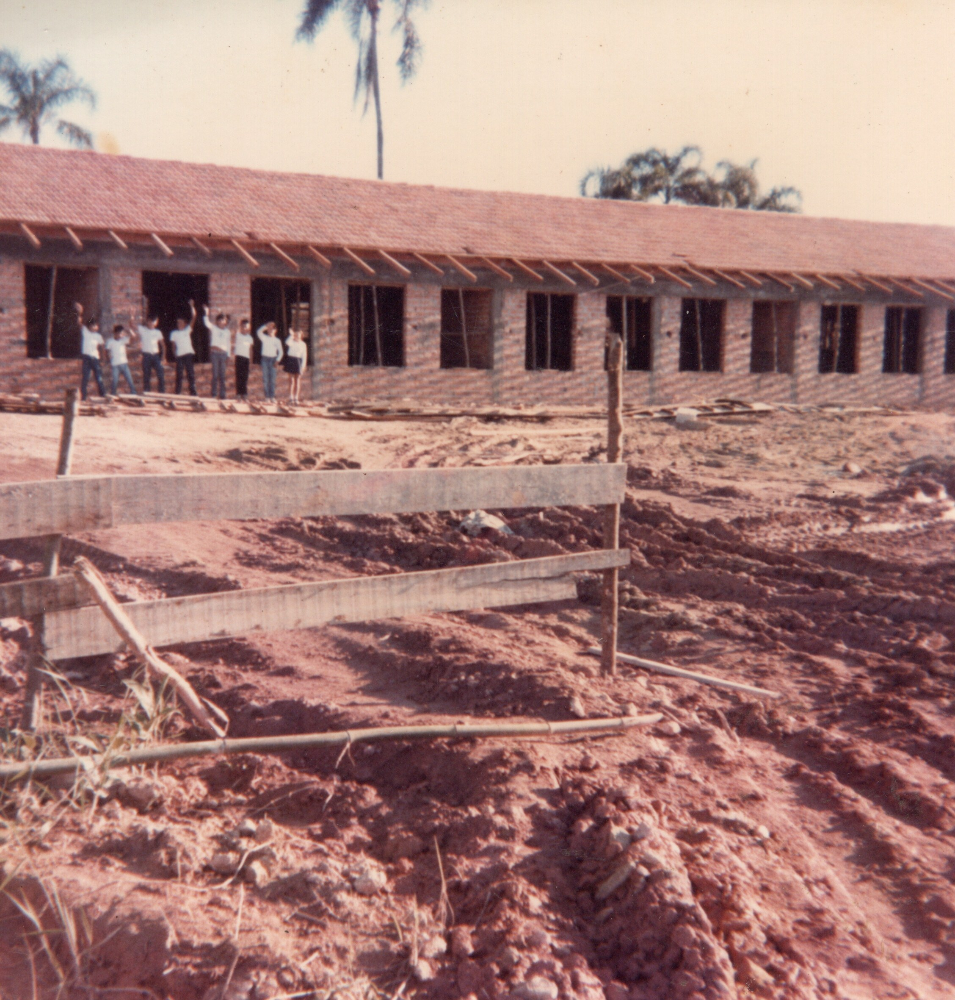
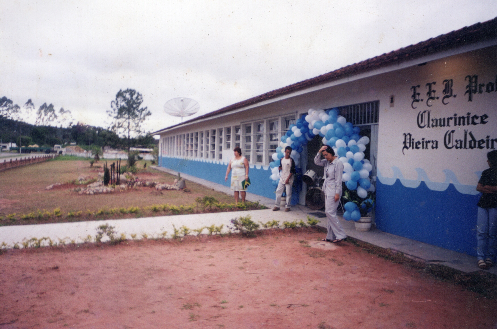
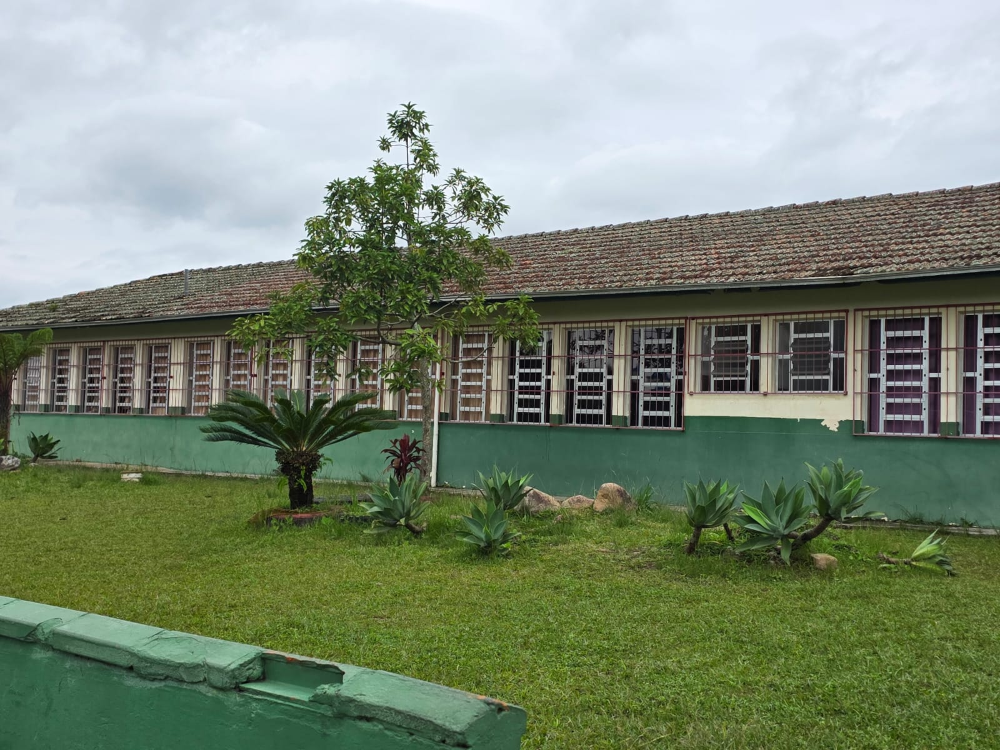

Sete décadas de educação, memória e pertencimento
em São Francisco do Sul.
Fundada em 16 de fevereiro de 1956 · São Francisco do Sul · Santa Catarina

Uma intelectual que dedicou sua curta vida aos estudos e à caridade ao próximo — e cuja memória ilumina esta escola há 70 anos.
Claurinice Vieira Caldeira nasceu em 1925 e desde a infância foi aluna de destaque, conquistando reiteradamente os primeiros lugares e recebendo, por diversas vezes, a honra ao mérito.
Intelectual e generosa, lecionou gratuitamente preparando alunos para exames de admissão. Atuou, também sem remuneração, na Biblioteca Municipal de São Francisco do Sul, onde exerceu a função de bibliotecária com zelo e dedicação. Como jornalista, publicou diversos artigos em jornais locais.
Falecida precocemente em 1955, aos 30 anos, foi reconhecida como destaque da sociedade francisquense. Em sua homenagem, a escola que abriria suas portas no ano seguinte recebeu seu nome — e assim ela continua presente, viva em cada aluno que por aqui passa.
O ginásio de esportes, inaugurado em 2024, é o único vinculado a uma escola pública em São Francisco do Sul. Com arquibancadas, vestiários, enfermaria, sala de jogos e academia, representa mais de R$ 3,6 milhões investidos na comunidade escolar — e uma conquista aguardada desde 2010.
Registros históricos da EEB Professora Claurinice Vieira Caldeira.

Fachada — acervo histórico

Vista lateral — acervo histórico

Fachada atual — 2026
Setenta anos não se constroem sozinhos.
Cada aluno, cada professor, cada família que passou
por esta escola deixou uma marca.
E essas marcas merecem ser guardadas para sempre.
"Estamos construindo o Livro de Memórias da CVC — uma obra escrita por muitas mãos. Queremos a sua história dentro dele."